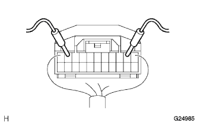
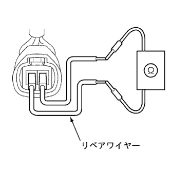
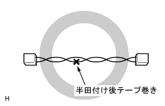
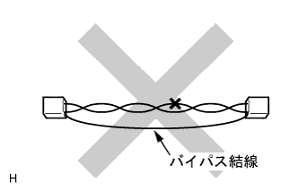

)
)CAN Communication System Precaution |
)When measuring the resistance of the CAN bus, turn the IG OFF, confirm that warning functions such as the key reminder warning system are not operating, and leave the vehicle for 1 minutes or more without operating the key or switches or opening/closing the doors before starting measurement. If it is necessary to open a door during inspection, open it beforehand.
 |
As a rule, perform continuity inspection by applying the tester from the back side of the connector.
 |
If the tester cannot be applied from the back side of the connector, use a repair wire.
| Part | Repair Wire Part No. |
|---|---|
| DLC3 | Diagnosis Check WireNo.2 (09843-18040) |
| Engine control computer (EFI ECU) ABS & traction actuator assembly (VSC ECU) vehicle harness connector | 82998-24360 (small diameter/signal terminal) 82998-12430 (large diameter/power source terminal) |
| Yaw rate sensor vehicle harness connector | 82998-24250 or 82998-24260 |
 |
After soldering the repaired area, wrap it with tape.
 |
Do not make bypass connections at the repaired area.